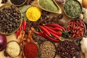

Pistacia lentiscus
Мастика – это ароматическая смола вечнозеленого деревца семейства сумаховых. Мастичное дерево, легко опознаваемое по кожистым листьям и скоплениям красных ягод, которые при созревании темнеют, растет по всему Средиземноморью, но самые знаменитые и приносящие наибольший урожай смолы деревья находятся на греческом острове Хиос. «Он так называется по-арамейски потому, что там производится мастика, которая у сирийцев (арамейцев) именовалась хио (chio)» [175].
Деревья острова Хиос при надрезании коры действительно источают особо ароматную смолу, которая засыхает в виде полупрозрачных хрупких грушевидных капель, называемых «слезы» (иногда они словно присыпаны белым порошком). Более качественные, то есть более прозрачные и твердые «слезы» получили название «кремни» (dahtilidopetres); мягкие и покрытые пятнами считаются низкосортными и именуются «пузыри» (kantiles). Мастика имеет характерный сосновый, камфарный вкус и при пережевывании приятно смягчается. Видимо, мастика – это первая, самая оригинальная жевательная резинка, и у нее до сих пор есть свои поклонники. Все мы являемся свидетелями глобальной популярности жевательной мастики от Jordanian Shaarawi Brothers; впрочем, столь же легко можно купить пакет со «слезами» мастики в продуктовом магазине с ближневосточным «акцентом» и начать жевать их, главное – не обращать внимания на то, что поначалу мастика кажется горькой.
Согласно местной легенде, за мастичные деревья Хиос должен благодарить святого Исидора Хиосского (?–251). Исидор был родом из Александрии, служил офицером в римском военно-морском флоте. В 251 году, когда его корабль пришвартовался у Хиоса, Исидор признался своему командиру Нумерию, что является христианином. Нумерий потребовал от него отречься от веры и даже призвал на помощь отца Исидора, но тот был непреклонен. Исидора привязали к лошади и протащили по скалам, потом тело обезглавили и бросили в пруд. В этот момент все деревья на южной стороне острова начали одновременно плакать «хиосскими слезами»…
На юге острова и поныне находится Мастихохория – объединение деревень, жители которых производят мастику. В 1822 году, во время войны за независимость Греции, тысячи жителей Хиоса были убиты османскими войсками, что нашло отражение в картине Эжена Делакруа (1798–1863) «Резня на Хиосе» (Eugene Delacroix. Scene des massacres de Scio). Тогда спаслись только жители Мастихохории; мастичная смола была в большом фаворе в турецких гаремах, поскольку освежала дыхание, отбеливала зубы и… давала скучавшим наложницам хоть какое-то занятие. Когда Хиос находился под властью Османской империи, наказанием за кражу мастики была смертная казнь. С 1913 года остров Хиос принадлежит Греции.
Вряд ли нужно объяснять происхождение английского термина mastication – «разжевывание». Но мастику не только жуют. Так, греческий десерт «Сладкая ложка» (Gliko tou koutalio) готовят, выливая в ледяную воду смесь из мастики и сахара.
Применение: Мастику кладут в выпечку, предназначенную для церковных праздников, например в пасхальный кулич цурек или в критский артос. Мастика заметно усиливает аромат этих праздничных хлебов и придает бо?льшую эластичность их текстуре.
Мастику-смолу добавляют в мастику-напиток, точнее, даже в два типа алкогольных напитков: первый – Masticha Chiou, разновидность бренди; второй – аналог анисовой водки узо, который, как правило, подают в качестве аперитива. На всем Ближнем Востоке смолу мастичного дерева с цветами апельсина или розовой водой используют как ароматизатор – кладут в сладости и рисовые пудинги. (Когда мастика появилась в программе 2004 года Desert Island Discs, или «Диски с необитаемого острова», Клаудиа Роден, автор многочисленных книг по еврейской и ближневосточной кухне, назвала мороженое со вкусом мастики лучшим десертом для необитаемого острова.) До того как при переработке мяса в качестве связующего агента начали использовать полифосфаты, эту роль играла мастика – отсюда ее присутствие в маринадах для шаурмы.
Автор арабской «Поваренной книги» (Kitab al-, The Book of Dishes, 1226) Мухаммад бин Хасан аль-Багдади (?–1239) в своей работе часто упоминает мастику. Как правило, она входит в рецепты блюд из красного мяса вместе с перцем, зирой, корицей и кориандром – например, козленок готовится с уксусом, жареными листьями сельдерея, мастикой и шафраном. Клаудиа Роден в «Поваренной книге Ближнего Востока» (Claudia Roden. A Book of Middle Eastern Cookery, 1968) цитирует приведенный аль-Багдади рецепт жаркого из мяса и абрикосов, которое называется мишмишия (mishmishiya): в нем мастика работает в тандеме с молотым миндалем, в результате чего получается роскошный густой соус. В Сирии и Египте в праздничный мясной суп фата (fata) и в другие подобные блюда чаще кладут мастику с кардамоном. Мастика входит и в некоторые варианты смеси специй рас-эль-ханут.
Когда Уильям Лэнхэм в книге «Сад здравия» (William Langham. Garden of Health, 1579) отмечал, что «мастика также хорошо помогает от язв от мокроты», он имел в виду скорее болезнь десен, чем туберкулез. Мастика действительно уменьшает «заселенность» бактериями полости рта [176], а в XVIII веке использовалась как пломбировочный материал в стоматологии. В наше время новое поколение дорогих зубных паст ручной работы часто содержит мастику наряду с такими экзотическими ингредиентами, как прополис. Как информирует «Английский фармацевтической журнал» (English pharmaceutical journal) за 1861 год, настой мастики издавна использовался на Востоке для лечения младенческой холеры (cholera infantum). В смеси с хлебом и вином смолу мастичного дерева также прикладывали в качестве припарки к нижней части живота. Репутация мастики как надежного средства для лечения желудочно-кишечных расстройств укрепилась в 1998 году, когда исследования, выполненные в Ноттингемском университете, показали ее эффективность в отношении Helicobacter Pylori, бактерии, ответственной за возникновение некоторых видов язвы желудка. В 2006 году активный ингредиент был идентифицирован как изомастикодиеноловая кислота. Мастика также снижает уровень холестерина и является основой медицинского жидкого клея Mastisol, который используется для фиксации повязок, в частности хирургических стяжек.
Мастику иногда называют гуммиарабик – при этом нельзя путать ее с другим гуммиарабиком, смолой из дерева акации, который под «псевдонимом» E414 используется в качестве эмульгатора в безалкогольных напитках. Его можно обнаружить также в креме для обуви, чернилах для принтера и т. п.